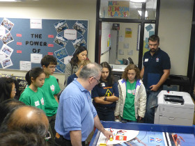
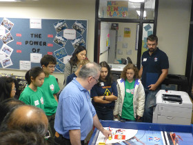

On September 18, 2015, Ctrl-Z, was invited to share its FLL expirience at in the 3rd annual "Get Your Bot On" Robotics Hackathon at the MaRs Discovery District. The 36 hour event focused on the design and prototyping of innovative ideas and solutions while working against the clock. The theme this year was "Healthy: People and Environments". In attendance, there were: 100 registered competitors 20 mentors on-site 3 age categories (Under 12, high school and post-secondary, industry professionals) 1 robot that made tea (called teabot). The competing teams were encouraged to consider the concept of healthier people, homes, schools and workplaces in their designs. Ctrl-Z team members hosted an information booth about FIRST, and educated those in attendance about FLL through demonstration of its innovative soulution and their robot.


Ctrl-Z share its knowledge at a FLL Robotics Symposium, at St. Mildred's-Lightbourn School. We presented on topics like: programming, building, project, and the robot game. We gave seminars based on topics and difficulty level, so the attendees could focus their learning.


 



On Saturday, September 27, 2015, Ctrl-Z presented to many new and returning teams and over 300 attendees at FLL Trash Trek Kick-off and Training Event hosted at Bayview Glen School. There, we refreshed and helped improve many enthusiasts building, programming, and presenting skills. We shared various concepts, from introductory to advanced, to help other teams make the best of this year’s season.


On Saturday December 5, 2015, Ctrl-Z volentered the Mary Ward Catholic School Regional Qualifying Tournament. They served as Table Re-Setters, Referees, Score Keepers, and more. The team was enthused by the opportunity to help out other teams and to give back to the FLL community, which has done so much for them.

On Saturday, November 28, 2015, Ctrl-Z volunteered at the Westview Centennial Secondary School regional qualifier. We served as score keepers, table reset volunteers, and referees. This not only enabled us to gain a better understanding of the rules, but also to appreciate the roles of volunteers at our upcoming tournament on December 12th. As well, it was another chance to give back to the FLL community that has done so much for us.